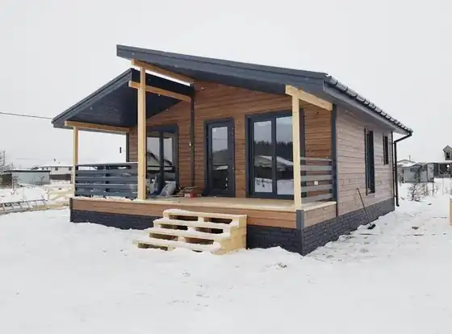
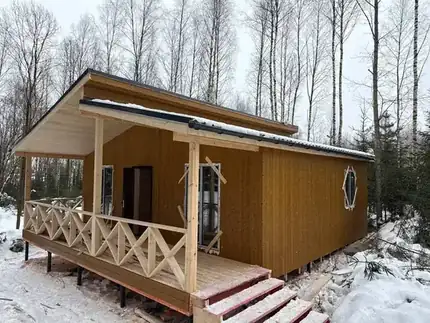
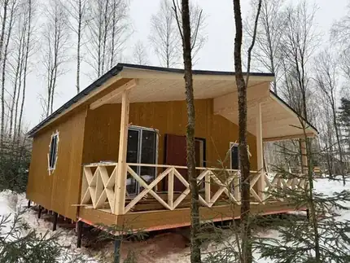

72 м²
72 м²Вы выбираете проект и комплектацию. Присылаем расчёт по выбранной комплектации.
Пробное бурение, тип почвы, глубина промерзания, уровень грунтовых вод, привязка дома по генплану. Фундамент подбираем под ваш грунт.
Инженер-проектировщик в штате считает снеговые и ветровые нагрузки вашего региона. Узлы, сечения и шаг стоек рассчитаны под реальные нагрузки.
Фиксируем цену, комплектацию и срок. Аванс 6%, остальное по ходу работ.
Пошаговые инструкции на каждый этап: каждый узел собирается одинаково правильно, а не по настроению бригады.
Передаём дом, документы и гарантию. Приезжайте смотреть на объект в любой момент стройки.
Инженер приезжает на ваш участок до начала работ и бурит пробные скважины. Смотрит, что под верхним слоем: песок, суглинок, торф или насыпной грунт.
Определяет глубину промерзания для вашего района и уровень грунтовых вод. От этого зависит, на какую глубину идут опоры и не выдавит ли их зимой.
Дом ставится на участке с учётом сторон света, въезда, соседних построек и отступов от границ. На бумаге это выглядит иначе, чем на месте.
По итогам выезда выбираем тип фундамента и глубину опор. Вы не переплачиваете за лишний запас и не рискуете там, где запас нужен.
Сушим доску в камере до влажности 12–16%, строгаем и калибруем. Каркас не ведёт, не трещит и не даёт усадку — не появляются щели и перекосы.
Шаг стоек 59 см. Основание — обвязка пакетом из трёх досок 140×45. В «Премиуме» сечение стен, пола и кровли увеличено до 200×45.
Плиточный каменный утеплитель высшего класса — держит форму и не сползает в стене со временем.
Инженер выезжает на участок до стройки: бурение, тип почвы, глубина промерзания, уровень грунтовых вод. По результатам выбираем тип фундамента.
Вентиляционный зазор 40×40 мм выводит влагу из-под кровли. Конёк и ветрозащитные уголки в цвет покрытия.
Окна ПВХ с трёхкамерным зимним остеклением ставим во всех комплектациях. Снизу дома — сетка от грызунов.
Гарантийный срок прописан в договоре. В него входит каркас, кровля и работы по возведению.
Комплектация, срок и сумма прописаны в договоре. Подорожал материал — это наш риск, а не ваша доплата.
Вы не отдаёте деньги вперёд. Основная часть платится по мере продвижения работ.
Инженер-проектировщик в штате считает снеговые и ветровые нагрузки вашего региона. Бригада строит по чертежу, а не на глаз.
Пошаговые инструкции на каждый этап. Результат не зависит от того, какая бригада вышла на объект.
Производство, действующая стройка или видео-встреча с командой. Смотрите, как мы работаем, прежде чем платить.
Приезжайте на производство или на дом, который мы строим сейчас. Если далеко — проведём видео-встречу с командой.
Москва, ул. Адмирала Корнилова 61Б · ПН–ВС 11:00–18:00 · WhatsApp и Telegram на том же номере
ПН–ВС 11:00–18:00, приём по записи
Сечение стен 150×45 или 200×45 мм, шаг стоек 59 см. Основание — обвязка пакетом из трёх досок 140×45. Соединения на оцинкованные гвозди 60, 90 и 120 мм, узлы усилены металлическими уголками. Сечения и шаг рассчитаны под снеговые и ветровые нагрузки вашего района.
Материал приезжает на объект манипулятором и снимается сразу на подготовленное место, а не сваливается на землю. Показываем разгрузку как есть.
Доска камерной сушки боится дождя и земли. Показываем, как складируем материал на вашем участке: на подкладках, под укрытием, с продувом. Чтобыдо монтажа он дошёл сухим.
Металлочерепица 0,5 мм, вентиляционный зазор 40×40 мм под покрытием, аэролента под коньком. Показываем, как собирается кровельный пирог на объекте.
Как защищаем каркас от ветра и влаги: мембраны, нахлёсты, проклейка стыков. Эти слои не видно в готовом доме, поэтому показываем на стройке.
Основание дома — обвязка пакетом из трёх досок 140×45 мм. Показываем, как она собирается на объекте: узлы, стыки и опирание на фундамент.
На каждый дом штатный инженер делает конструктивный проект: расчёт снеговых и ветровых нагрузок вашего региона, чертежи узлов, сечения и шаг стоек. Бригада строит по чертежу, а не на глаз.
Показываем доску, из которой собираем каркас: камерная сушка, строганая и калиброванная, влажность 12–16 процентов. Смотрите сами, что приезжает на объект.
Бригада живёт на объекте или рядом с ним. Показываем условия, в которых живут люди, которые строят ваш дом — без прикрас, как есть.
Планировки
Нажмите, чтобы рассмотреть с размерамиКонструктивный проект под ваш дом и ваш грунт делает штатный инженер.
Комплектация «под ключ» включает доставку и все работы по возведению.
Полный состав работ и материалов · 60 пунктов и 28 дополнительных опций
| Параметр | Холодный контур | Комфорт | Премиум |
|---|---|---|---|
| 1Каркас | |||
| 1Обработка антисептиком | Всего каркаса | Всего каркаса | Всего каркаса |
| 2Сечение каркаса стен | 150 × 45 мм | 150 × 45 мм | |
| 3Сечение каркаса пола | 150 × 45 мм | 150 × 45 мм | |
| 2Каркас (подробно) | |||
| 4Сечение каркаса кровли | 140 × 45 мм | 140 × 45 мм | |
| 5Тип основания | Обвязка пакетом из 3 досок 140 × 45 мм | Обвязка пакетом из 3 досок 140 × 45 мм | Обвязка пакетом из 3 досок 140 × 45 мм |
| 6Влажность доски | Сухая, камерной сушки | Сухая, камерной сушки | Сухая, камерной сушки |
| 7Шаг стоек каркаса | 59 см | 59 см | 59 см |
| 8Гвозди | Оцинкованные 60/90/120 мм | Оцинкованные 60/90/120 мм | Оцинкованные 60/90/120 мм |
| 9Усиливающие металлические уголки | Есть | Есть | Есть |
| 3Утепление | |||
| 10Тип утеплителя | Нет | +Плиточный утеплитель | Плиточный утеплитель |
| 11Утепление стен | Нет | +150 мм | |
| 12Утепление пола | Нет | +150 мм | |
| 13Утепление потолка | Нет | +150 мм | |
| 4Утепление (подробно) | |||
| 14Класс утеплителя | Нет | +Высший, базальтовый каменный | Высший, базальтовый каменный |
| 15Производитель утеплителя | Нет | +Технониколь | Технониколь |
| 16Плотность утеплителя | Нет | +25 кг/м³ | |
| 5Параметры | |||
| 17Высота стен внутри по краям дома | 250 см | 250 см | |
| 18Высота стен по центру дома | 370 см | 370 см | |
| 19Высота крыши (конька) | 120 см | 120 см | |
| 6Параметры дома (подробно) | |||
| 20Тип крыши | Два ската | Два ската | Два ската |
| 21Тип потолка | Под конёк | Под конёк | Под конёк |
| 7Отделка дома | |||
| 22Отделка стен и потолка внутри | Нет | +Вагонка АБ класс | |
| 23Отделка стен снаружи | Имитация бруса АБ класс | Имитация бруса АБ класс | Имитация бруса АБ класс |
| 24Покраска снаружи | Нет | Нет | Нет |
| 25Покраска внутри | Нет | Нет | Нет |
| 8Кровля | |||
| 26Материал кровли | Металлочерепица | Металлочерепица | Металлочерепица |
| 27Дождевые сливы | Нет | Нет | +Есть |
| 28Снегозадержатель | Нет | Нет | +Есть |
| 9Кровля (подробно) | |||
| 29Толщина металла кровли | 0,5 мм | 0,5 мм | 0,5 мм |
| 30Цвет кровли | RAL 7024 / RAL 8017 | RAL 7024 / RAL 8017 | RAL 7024 / RAL 8017 |
| 31Вентиляционный зазор кровли | 40 × 40 мм | 40 × 40 мм | 40 × 40 мм |
| 32Вынос кровли | 30 см | 30 см | |
| 33Аэролента | Есть | Есть | Есть |
| 34Конёк из металла | Есть, в цвет кровли | Есть, в цвет кровли | Есть, в цвет кровли |
| 35Ветрозащитные уголки | Есть, в цвет кровли | Есть, в цвет кровли | |
| 36Монтаж кровли | Прорезиненные саморезы | Прорезиненные саморезы | |
| 10Фундамент | |||
| 37Тип фундамента | Металлический свайно-винтовой фундамент | Металлический свайно-винтовой фундамент | |
| 11Фундамент (подробно) | |||
| 38Диаметр сваи | 89 мм | 89 мм | |
| 39Длина сваи | 2,5 м | 2,5 м | |
| 40Засыпка свай | Пескобетон М200 | Пескобетон М200 | |
| 41Геотекстиль вокруг свай | Нет | Нет | +Есть |
| 42Толщина металла лопасти | 4 мм | 4 мм | |
| 43Антикоррозийное покрытие свай | Есть | Есть | |
| 44Гидроизоляция оголовка | Рубероид | Рубероид | Рубероид |
| 45Размер оголовка сваи | 15 см | 15 см | 15 см |
| 46Зашивка цоколя | Нет | Нет | Нет |
| 12Чистовой пол | |||
| 47Чистовой пол в жилой части | Нет | +ОСБ-плита, 18 мм | |
| 48Сетка от грызунов | Есть | Есть | Есть |
| 13Окна | |||
| 49Тип окон | ПВХ | ПВХ | ПВХ |
| 50Количество стёкол | 3-е зимнее остекление | 3-е зимнее остекление | 3-е зимнее остекление |
| 14Двери | |||
| 51Тип дверей | Входные металлические двери (в соответствии с проектом) | Входные металлические двери (в соответствии с проектом) | Входные металлические двери (в соответствии с проектом) |
| 52Класс дверей | РФ — Промет | РФ — Промет | |
| 15Межкомнатные двери | |||
| 53Тип | Нет | +Филенчатые | Филенчатые |
| 16Терраса | |||
| 54Пол | Доска строганная 100 × 25 | Доска строганная 100 × 25 | |
| 55Стойки | Шлифованная доска | Шлифованная доска | Шлифованная доска |
| 56Ступеньки | Есть, 2 м | Есть, 2 м | |
| 57Потолок на террасе | Зашита имитацией бруса АБ класса | Зашита имитацией бруса АБ класса | |
| 17Коммуникации | |||
| 58Закладные отверстия под трубы | Есть | Есть | Есть |
| 18Логистика | |||
| 59Доставка | Бесплатно до 100 км, далее по тарифу перевозки | Бесплатно до 100 км, далее по тарифу перевозки | Бесплатно до 100 км, далее по тарифу перевозки |
| 60Все работы по возведению | Включены | Включены | Включены |
| 19Дополнительные опции · стоимость по запросу | |||
| Крыша и кровля | |||
| 61Сложная крыша (стандарт) | Доступна | Доступна | Доступна |
| 62Крыша с ендовой (Г-образная) | Доступна | Доступна | Доступна |
| 63Двухуровневая крыша (2 ската) | Доступна | Доступна | Доступна |
| 64Конёк 150 см вместо 120 | Доступна | Доступна | Включена |
| 65Снегодержатели | Доступна | Доступна | — |
| 66Дождевые сливы | Доступна | Доступна | — |
| Каркас и стены | |||
| 67Каркас всего дома 150 → 200 мм | Доступна | Доступна | — |
| 68Каркас пола и кровли → 200 мм | Доступна | Доступна | — |
| 69Высота стен по краям 270 см | Доступна | Доступна | Включена |
| Фундамент | |||
| 70ЖБ сваи 3000/150 мм | Доступна | Доступна | Доступна |
| 71Винтовые сваи 3000/108 мм | Доступна | Доступна | Доступна |
| 72Обшивка цоколя декоративным камнем | Доступна | Доступна | Доступна |
| Отделка снаружи | |||
| 73Сайдинг | Доступна | Доступна | Доступна |
| 74Хауберг (мягкая кровля на стены) | Доступна | Доступна | Доступна |
| 75Вагонка АБ | Удешевляет | Удешевляет | Удешевляет |
| 76Покраска дома снаружи | Доступна | Доступна | Доступна |
| Отделка внутри | |||
| 77Имитация АБ | — | Доступна | Включена |
| 78Вагонка АБ | — | Включена | Удешевляет |
| 79Покраска стен и потолка внутри | Недоступна | Доступна | Доступна |
| Пол | |||
| 80Ламинат на пол | Доступна | Доступна | Доступна |
| 81Шпунтованная доска 140×32 мм | — | Доступна | Включена |
| Окна | |||
| 82Сложные окна | Доступна | Доступна | Доступна |
| Инженерия | |||
| 83Электрика | Доступна | Доступна | Доступна |
| 84Разводка труб | Доступна | Доступна | Доступна |
| 85Вентиляция в доме | Доступна | Доступна | Доступна |
| Прочее | |||
| 86Аренда генератора | Доступна | Доступна | Доступна |
| 87Уличный туалет | Доступна | Доступна | Доступна |
| 88Пронос материала | Доступна | Доступна | Доступна |
Сумма фиксируется в договоре до начала работ. Подорожал материал — это наш риск.
Срок прописан в договоре. За каждый день просрочки платим вам.
Переносим стены, добавляем санузел, расширяем террасу — пересчитаем конструктив сами.